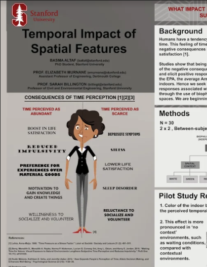
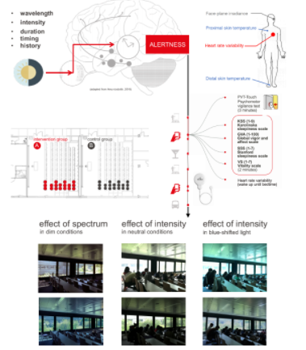
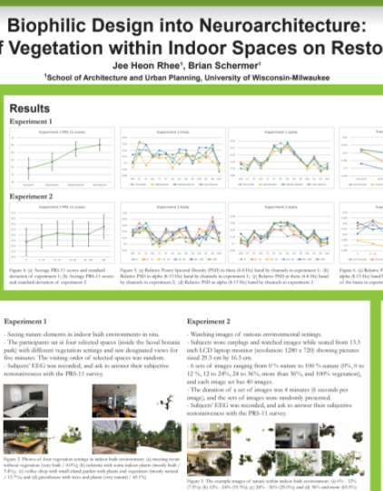
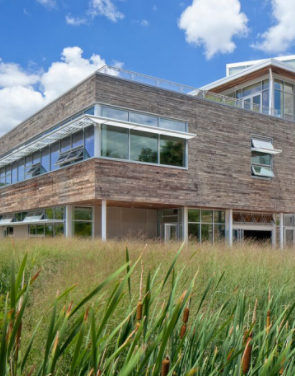
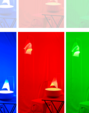

Posters | Performance Variables: Biophilia, Color, Light
Posters aren't eligible for credit


Elnaz Abbasian

Isabela Franco Schreiber,Suzana Fetter Fagundes

Marilyne Andersen, Victoria E. Soto Magán, Forrest Webler, Clotilde Pierson

Rhee Heon Rhee,Brian Schermer

Maria da Piedade Ferreira

Sarah Williams Goldhagen, Jennifer Jane Roe, Hana Kassem, Collin Ellard

Judy Theodorson